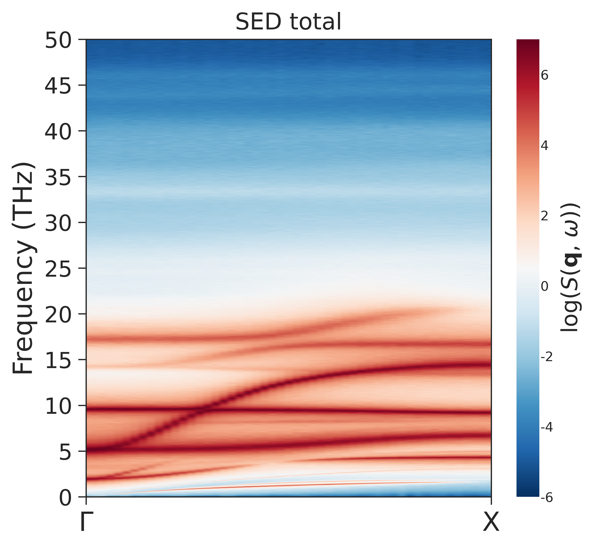

Local-Mode SED from a LAMMPS Run
This tutorial shows the full local-mode SED workflow starting from a LAMMPS MD
run. The target signal is a Ti-centered local polar distortion d(Ti) and its
time derivative, not an all-atom velocity field. The workflow is:
write the local Ti displacement and displacement velocity from LAMMPS
convert the LAMMPS text dump to
npyarrays on a fixed gridcalculate and plot the local-mode SED with
ferrodispcalc.sed
The example uses LAMMPS metal units:
time in ps
displacement in Angstrom
velocity in Angstrom/ps
With dt_ps in ps, numpy.fft.fftfreq returns frequency in 1/ps, which
is numerically THz.
LAMMPS Setup
Only the SED-specific LAMMPS setup is shown here. The force field, thermostat, cell setup, and equilibration details are not part of the SED interface.
atom_style atomic
units metal
atom_modify map array
comm_modify vel yes
plugin load /path/to/ferrodispcalc/src/lammps/dispplugin.so
plugin list
timestep 0.001
variable dt_dump equal 10
compute 1 all disp/atom nnfile ./structure/nl-bo.dat vel yes
group Ti type 3
dump dipole Ti custom ${dt_dump} dipole.dat \
id type c_1[1] c_1[2] c_1[3] c_1[4] c_1[5] c_1[6]
dump_modify dipole sort id
The plugin command compute ... disp/atom reads the neighbor-list file
nl-bo.dat and computes six values for each selected Ti atom:
c_1[1:3]: local Ti displacementd(Ti)c_1[4:6]: local Ti displacement velocity
comm_modify vel yes is required when velocity output is requested with
vel yes. Dump sorting by atom id makes the downstream grid mapping stable.
If the production dump is written to dipole.dat with stride
dt_dump = 10 and timestep 0.001 ps, the stored-frame spacing is
dt_ps = 0.01 ps.
Convert dipole.dat to dipole.npy
The following script converts the LAMMPS text dump to a fixed-grid numpy array. It assumes the current directory contains:
dipole.datfrom the LAMMPSdump dipolecommandstructure/model.xyzfor the structure used to define the grid
Save this as load_dipole_data.py and adjust nframe, natom, and
target_size for your system.
import numpy as np
from tqdm import tqdm
from ase.io import read
from ferrodispcalc.vis import grid_data
def load_c1_to_npy(
dump_file,
out_file="c1.npy",
nframe=100001,
natom=3600,
dtype=np.float64,
):
c1_out = np.lib.format.open_memmap(
out_file,
mode="w+",
dtype=dtype,
shape=(nframe, natom, 6),
)
timesteps = np.empty(nframe, dtype=np.int64)
cidx = None
ncol = None
with open(dump_file, "rb") as f:
for iframe in tqdm(range(nframe), desc="Reading frames"):
f.readline() # ITEM: TIMESTEP
timesteps[iframe] = int(f.readline())
f.readline() # ITEM: NUMBER OF ATOMS
f.readline() # natom
f.readline() # ITEM: BOX BOUNDS ...
f.readline()
f.readline()
f.readline()
atoms_header = f.readline().decode("ascii").split()
columns = atoms_header[2:]
if cidx is None:
wanted_cols = [f"c_1[{i}]" for i in range(1, 7)]
cidx = [columns.index(name) for name in wanted_cols]
ncol = len(columns)
block = b"".join(f.readline() for _ in range(natom))
arr = np.fromstring(block, sep=" ", dtype=dtype).reshape(
natom,
ncol,
)
c1_out[iframe] = arr[:, cidx]
np.save("timesteps.npy", timesteps)
del c1_out
return out_file
# Step 1: text dump -> c1.npy with shape (nframe, n_Ti, 6)
load_c1_to_npy(
dump_file="dipole.dat",
out_file="c1.npy",
nframe=100001,
natom=3600,
dtype=np.float64,
)
# Step 2: atom-wise Ti data -> fixed grid
c1 = np.load("c1.npy", mmap_mode="r")
atoms = read("structure/model.xyz")
dipole = grid_data(
atoms,
c1,
["Ti"],
target_size=[6, 6, 100],
)
np.save("dipole.npy", dipole)
The intermediate c1.npy has shape (nframe, n_Ti, 6). The final
dipole.npy has shape (nframe, nx, ny, nz, 6):
dipole[..., 0:3]:d(Ti)dipole[..., 3:6]: velocity ofd(Ti)
Run the conversion in the directory containing dipole.dat:
python load_dipole_data.py
If c1.npy already exists, you can comment out the load_c1_to_npy call
and regenerate only dipole.npy from the mapped structure.
Calculate SED
All SED APIs are imported from ferrodispcalc.sed. The calculation requires
explicit q-points. Use generate_commensurate_qpath to create q-points that
are allowed by the primitive-cell grid.
from pathlib import Path
import numpy as np
from ferrodispcalc.sed import (
calculate_sed,
generate_commensurate_qpath,
plot_sed,
save_sed,
)
output_dir = Path("sed-output")
output_dir.mkdir(parents=True, exist_ok=True)
dipole = np.load("dipole.npy", mmap_mode="r")
dt_ps = 0.001 * 10
frame_start = 1
max_frames = 100000
primitive_shape = (1, 1, 1)
num_splits = 5
n_jobs = 4
q_path = np.array(
[
[0.0, 0.0, 0.0],
[0.0, 0.0, 0.5],
],
dtype=float,
)
grid_shape = tuple(int(v) for v in dipole.shape[1:4])
cell_shape = tuple(g // p for g, p in zip(grid_shape, primitive_shape))
qpoints, q_distances = generate_commensurate_qpath(q_path, cell_shape)
stop = frame_start + max_frames
dti = dipole[frame_start:stop, :, :, :, 0:3]
dti_result = calculate_sed(
field=dti,
dt_ps=dt_ps,
qpoints=qpoints,
primitive_shape=primitive_shape,
num_splits=num_splits,
remove_mean=True,
n_jobs=n_jobs,
)
save_sed(dti_result, output_dir / "dTi_displacement.npz")
velocity = dipole[frame_start:stop, :, :, :, 3:6]
velocity_result = calculate_sed(
field=velocity,
dt_ps=dt_ps,
qpoints=qpoints,
primitive_shape=primitive_shape,
num_splits=num_splits,
remove_mean=False,
n_jobs=n_jobs,
)
save_sed(velocity_result, output_dir / "dTi_velocity.npz")
np.save(output_dir / "q_distances.npy", q_distances)
plot_sed(
velocity_result,
q_distances=q_distances,
component="total",
q_labels=(r"$\Gamma$", "Z"),
savepath=output_dir / "dTi_velocity-total-SED.png",
)
For displacement-like fields, set remove_mean=True to remove the static
local distortion and the DC component before the time Fourier transform. For
velocity-like fields, use remove_mean=False.
Reference Output
{kind=link}

Total SED intensity for the Ti displacement velocity field along
Gamma -> Z.
q-Point and Primitive-Cell Convention
calculate_sed does not generate q-points internally. The q-points are
reduced coordinates with shape (nq, 3) and use the phase convention
exp(+i * 2*pi * dot(q, cell_index)).
For an input grid (nx, ny, nz) and primitive_shape=(px, py, pz), the
number of primitive cells is:
cell_shape = (nx // px, ny // py, nz // pz)
qpoints, q_distances = generate_commensurate_qpath(q_path, cell_shape)
Allowed reduced q-points satisfy q * cell_shape being integer-valued.
Changing primitive_shape changes which grid points are treated as basis
local modes inside one primitive cell. For example, primitive_shape=(1, 1,
5) treats five local modes along z as basis modes and reduces the number of
primitive cells along z by a factor of five.
SED Array Convention
The returned result.sed array has shape (nfreq, nq, 4). The last axis
is ordered as:
0: x component1: y component2: z component3: total, equal tox + y + z
The normalization is 1 / (Nt * Ncell) before averaging over time blocks,
where Nt is the number of frames in one block and Ncell is the number
of primitive cells. No mass weighting is applied. The absolute intensity is
therefore an internal convention for the chosen local variable; peak positions,
frequency axis, and q-point dispersion are the robust comparison targets.
Loading and Replotting
Use save_sed and load_sed for the compressed npz format:
import numpy as np
from ferrodispcalc.sed import load_sed, plot_sed
loaded = load_sed("sed-output/dTi_velocity.npz")
q_distances = np.load("sed-output/q_distances.npy")
plot_sed(
loaded,
q_distances=q_distances,
component="z",
q_labels=(r"$\Gamma$", "Z"),
savepath="sed-output/dTi_velocity-z-SED.png",
)
See calculate_sed(),
generate_commensurate_qpath(),
load_sed(), save_sed(), and
plot_sed() for API details.